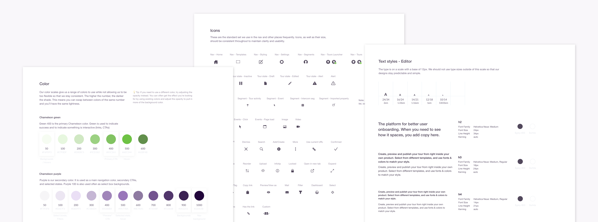
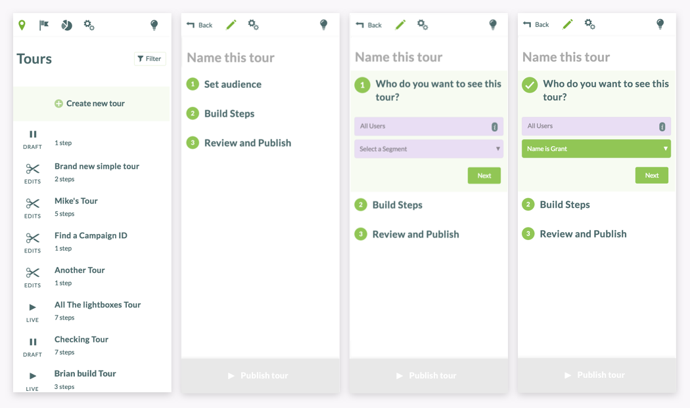
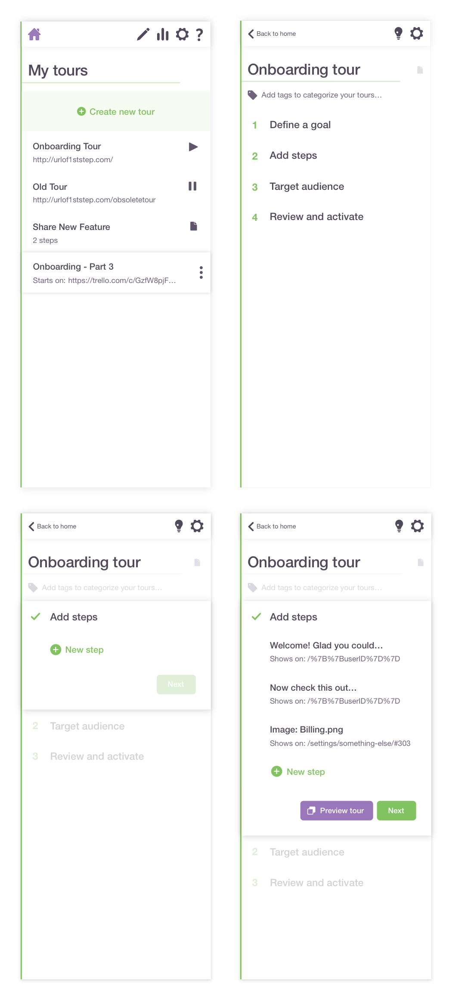
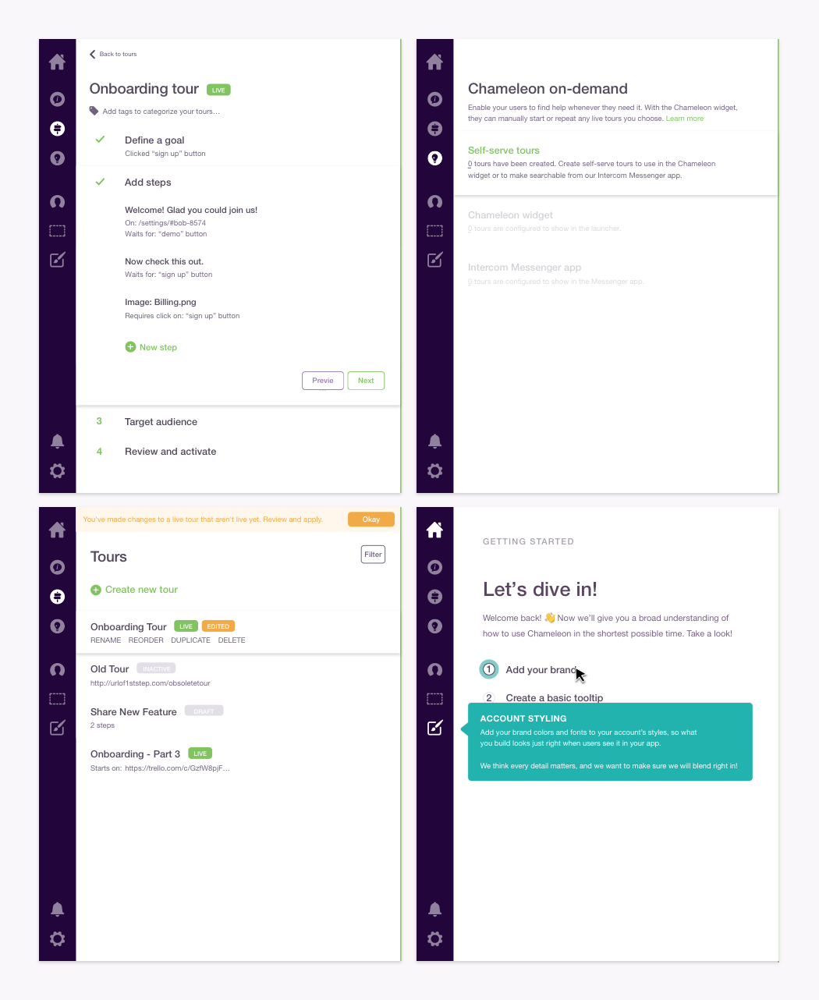
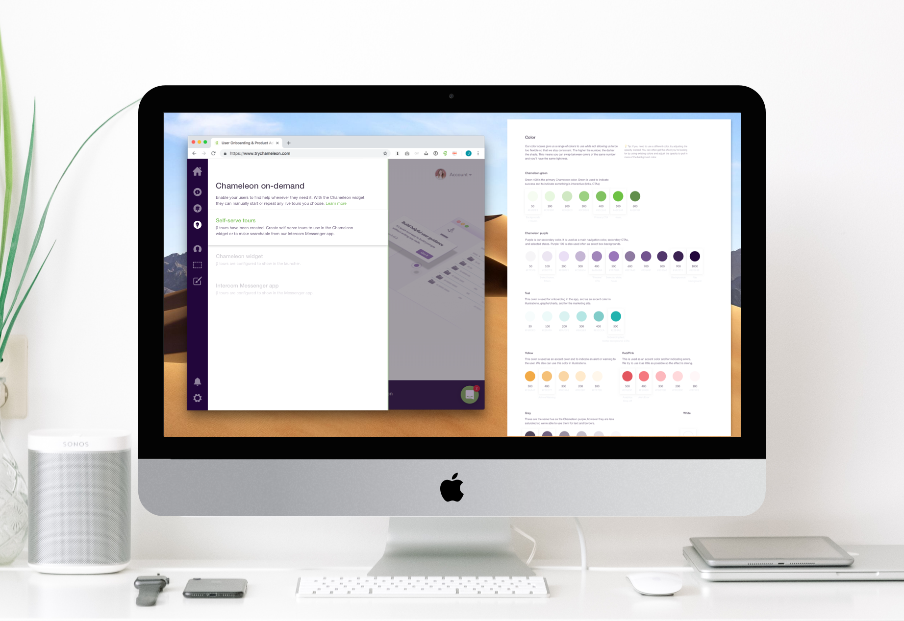

Chameleon design system

Internal problems
Learning the current system
Tackling this problem early on gave me an opportunity to better understand Chameleon’s current system: what was well defined and what needed to be more clearly articulated. By assessing what rules were already in place, I could find what could be improved and add more consistency to the existing design.
Creating a communication tool
I also wanted to create a more obvious communication tool between myself, my teammates, and any contract/future designers we’d work with. With a clear system, I hoped to articulate an expectation of structure and polish (for both design and build), as well as create a record for defining why we’d made past decisions and guidelines for new additions.
This project initially began as a balance between what existed and what could be updated mainly within those constraints. However, we were simultaneously making some UX decisions that influenced not only the size of our app, but also provided more leeway to update current styles more holistically. It continues to be revised and improved as we find holes or need new components.

Internal goals
- Understand current design system and constraints
- Reduce inconsistency
- Better communicate the system & expectations between other designers and teams
- Make it easier for design to make decisions
- Make it easier for developers to build components and simplify updates as they change

External problems
External goals
- Strengthen perceived value of our app
- Create a system that allows for scalability (e.g. introducing new products to the platform)
Poorly perceived value
There were enough problems to solve for internally, however when making several changes to an interface, I needed to make sure they were valuable improvements for our users as well.
At the time our app primarily resided in a sidebar that sat on top of our customer’s app. This sidebar could be opened from an accessible tab you could see from any page the Chameleon snippet was on. Our team originally chose this because they wanted to create a presence on their customers apps. They hoped to encourage more usage and visually embed our tool in our customers’ workflows. Simultaneously, they also wanted to be respectful of the real estate they were taking up and blocking while the Chameleon app was open, so they kept their sidebar narrow.
Taking note of customer feedback
These intentions turned out to be problematic long term. As we collected feedback from users, we began to learn from those that had churned, perceived value was a serious issue for us. Many of our competitors are larger companies than we are, but even without this knowledge, Chameleon was visually a smaller app. We stood against full screen web apps while we were attempting to take up as little space as possible and it wasn’t working in our favor. It felt “less robust” and was thought to have “less features,” when in reality this was merely an issue of how it was visually represented.
Difficult to scale
Our app size also prevented our product to scale into the platform we were intending to build out. We didn’t have room for strong navigation, let alone multiple products sitting within the existing UI.
And while we were accessible on our users’ apps, our presence there didn’t necessarily encourage quality Chameleon usage. We found (and learned we actually preferred) when users built product tours with intention, mapped their use cases, or at least set goals, that this planning made for more successful tours.
Balancing constraints
One of my initial ideas to create an obvious change in how we were perceived was to convert our sidebar into a larger web app. However, this wouldn’t be merely front end changes and the cost had to be weighed against what else we could improve. We concluded this was an overhaul we didn’t have the resources for at the time, so I sought out other ways to help solve for this issue.


Final design
Solutions that shaped the design system
- Defining clear rules for when and why we’d use colors or font weights
- Mapping out a sharable guide to use across teams
- Scoping down our color palette
- Adding a grid
- Widening the sidebar
Scoping the system and adding rules
From colors to type I spec'd out a set of rules that blended existing constraints. From what was primary, to how we’d tend to use it, to additional colorways or font weights that could be useful in outlier cases.
An important way reduced our color palette was by using the same hue for our type as I did in our navigation UI. Though the type was significantly less saturated, reducing hues made the app feel like there were less colors, and helped us maintain focus on actions we wanted to intentionally call out.
Another thing I added to our system was a grid. We currently didn’t have anything in the app on a grid and between that and the vague design examples, layouts and spacing were inconsistent. Inconsistencies like this can chip away at hierarchy especially in smaller spaces. The grid constrained our options and helped us make spacing decisions more easily.
Creating more space
Finally, I nearly doubled the width of our sidebar. This additional space allowed me to make room for new navigation and additional products that were on our roadmap. It also created a larger presence on the page and greater perceived value.
Additional learnings
One of the biggest things I learned from this project was when a rule seems to get broken more frequently, it’s time to reevaluate its definition and purpose. This allows for the system to be fluid, but also maintain constraints. It means across teams and across designers, we can stick to definitions until we find the use for them has changed, and hopefully streamline all of our workflows.
